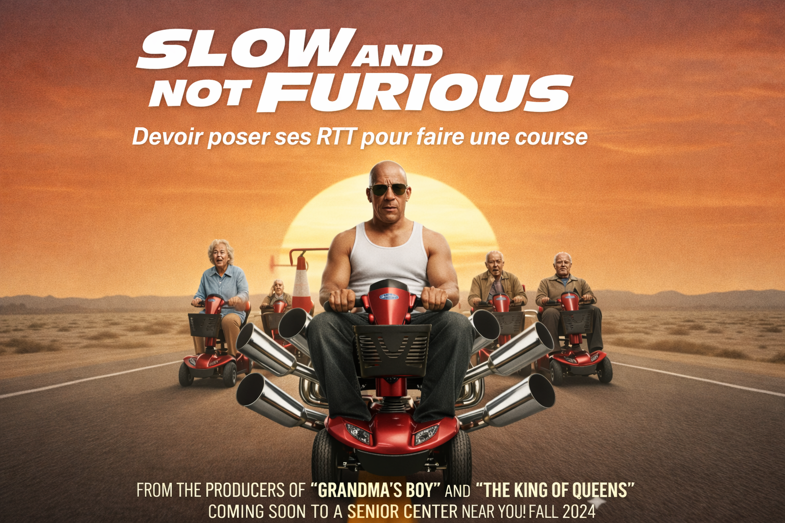

SLOW AND NOT FURIOUS
Toretto a raccroché les roues.
Après des années à rouler à 300 km/h sur des autoroutes
fermées, à sauter entre des gratte-ciels en Dodge Charger et
à défier les lois de la physique au nom de la famille, Dom a
vieilli. Il a 67 ans désormais. Le dos qui lâche. Le genou
droit qui craque dans les escaliers. Et une ordonnance pour
la tension sur le frigo.
Il a passé le code de la route. Le
vrai. Celui avec les panneaux. Du premier coup, mais de
justesse.
Désormais installé dans un pavillon de banlieue
avec Letty, il roule à 23 km/h en agglomération. Pas 50. Pas
30. 23. Parce que c'est confortable, parce que ça laisse le
temps de voir le paysage, et parce que le médecin a dit
d'éviter le stress. Il met son clignotant 45 secondes avant
de tourner. Il s'arrête aux feux orange depuis 200 mètres.
Les conducteurs derrière lui klaxonnent. Il ne comprend pas
pourquoi ils sont si pressés.

PLAY